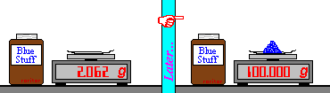

Identify the major source of error in each situation as either systematic or random:
A student is trying to measure out exactly 100 g of a chemical several times, using a weighing paper on an electronic scale. However, he always forgets to "tare" (re-zero) the display after placing the paper on the scale.